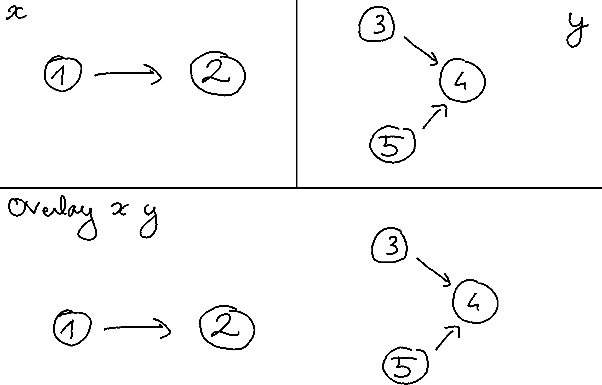
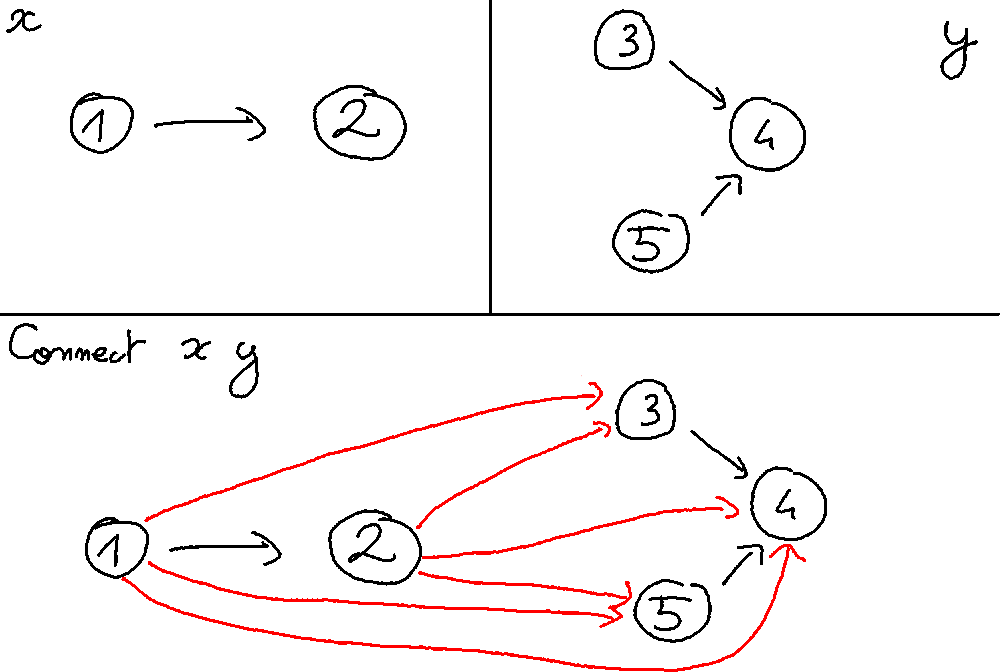
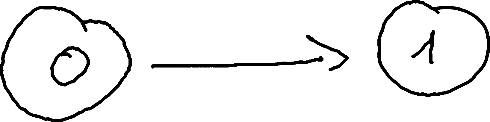
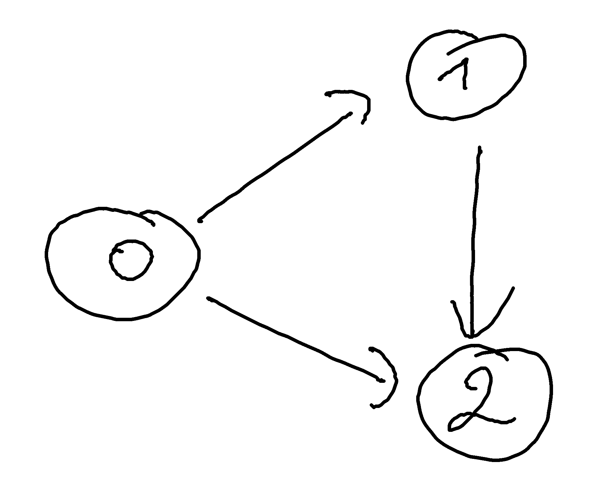
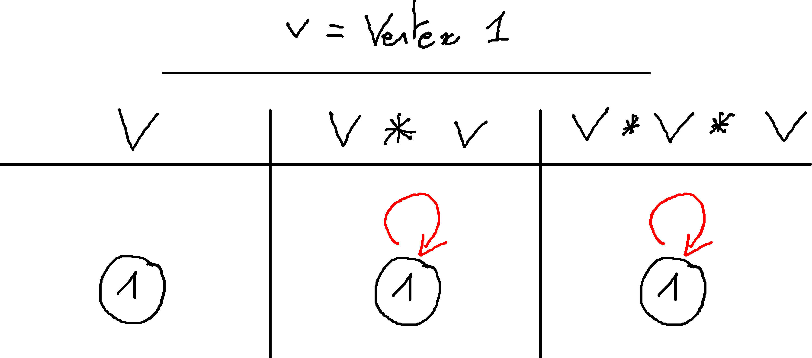
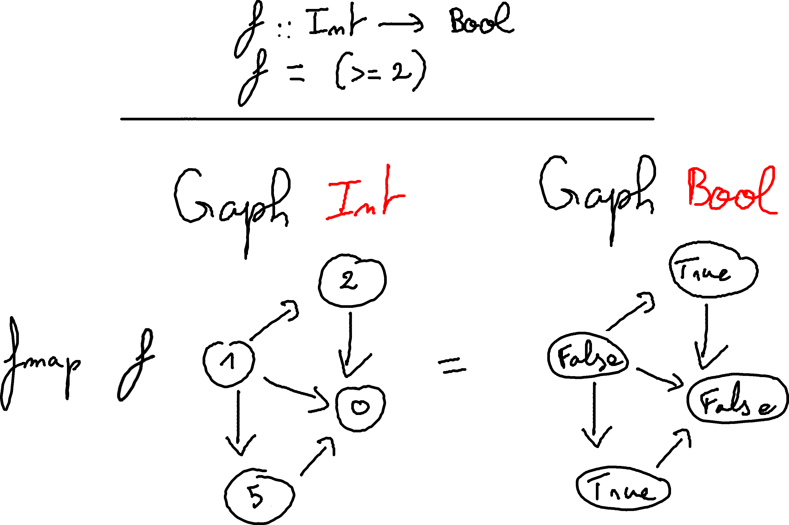

Here you will learn the basics of Alga, an implementation of an algebra of graphs. Every given examples is runnable, so please feel free to install alga (with cabal or stack) and have a GHCi console near you if you want to try the code. All you need to have is inside the Algebra.Graph module. Don’t hesitate to have a look at the module documentation if you want more informations.
If you encounter any bug (I hope you will not), please open an issue at https://github.com/snowleopard/alga/issues/.
Graphs are traditionally defined as a pair comprising a set V of vertices and a set E ⊆ V × V of edges. This is great when working with traditional imperative languages, but leads to some problems when trying to use it in a functional languages such as Haskell.
The idea of alga is to use an other definition of graph, more “functional-friendly“. As the most part of the “functional-friendly” data structures is recursive, such is the alga’s graph definition:
data Graph a = Empty
| Vertex a
| Overlay (Graph a) (Graph a)
| Connect (Graph a) (Graph a)So it says:
You have an only way to construct the empty graph, using the constructor Empty which does not take any argument.
You can construct a graph from anything, transforming it in a single vertex using the constructor Vertex.
You can overlay two graphs, that is just to put them next one to another.

You can connect two graphs, that is drawing an edge from each vertex of the left side to each vertex to the right side.

Simple, no? … Well ok this is not a standard way to see a graph, but don’t worry, you will get used to it.
Just remember: The only way to create edges is using Connect.
This definition allow us to deal with directed graphs: An edge from vertex 1 to vertex 2 is NOT the same than an edge from vertex 2 to vertex 1.
So, how to use this definition? Here is some examples:
A single path, from a vertex 0 to a vertex 1 can be viewed as Connect (Vertex 0) (Vertex 1)

A triangle, with an edge from vertex 0 to vertex 1, an edge from vertex 0 to vertex 2, and an edge from vertex 1 to vertex 2 can be viewed as Connect (Vertex 0) (Connect (Vertex 1) (Vertex 2)).

I heard you from my desktop:
“Berk, but writing big graphs by hand can become very annoying !“
Don’t worry, there are some shortcuts.
Overlay and Connect look like operators, and we want to use them as. So we pose:
(+) = Overlay
(*) = ConnectIn fact, if we have something of the Num instance, we can transform it directly into a graph using Vertex. This leads to this instance:
instance Num a => Num (Graph a) where
fromInteger = Vertex . fromInteger
(+) = Overlay
(*) = Connect
signum = const Empty
abs = id
negate = idThis means that, in a context of a Graph, we have Vertex 1 == 1, which is quite useful!
Do you see why alga is an implementation of an algebra of graphs? There is a lot of maths here! No please don’t run away like you have seen a zombie in a graveyard! Don’t worry, this is not-so-difficult math.
We will use the (+) and (*) notation, but these laws are true even when dealing with any graphs.
As usual, (+) is associative (the order in which you are choosing to overlay graphs is not important):
(1 + 2) + 3 == 1 + (2 + 3)(+) is also commutative (overlaying a and b is the same as overlaying b and a):
1 + 2 == 2 + 1(+) has Empty as a neutral element (overlaying an Empty graph to another graph is this graph):
1 + Empty == 1 == Empty + 1(+) is idempotent (overlaying a graph with itself is the same graph):
1 + 1 == 1As usual, (*) is associative (the order in which you are choosing to connect graphs is not important):
(1 * 2) * 3 == 1 * (2 * 3)(*) is NOT commutative (drawing an edge from vertex 1 to vertex 2 is not the same as drawing an edge from vertex 2 to vertex 1):
1 * 2 /= 2 * 1(*) it has Empty as a neutral element (connecting an Empty graph to another graph is this graph):
1 * Empty == 1 == Empty * 1(*) can saturate (connecting three times the same graph is the same as connecting two times the same graph)
1 * 1 * 1 == 1 * 1Why (*) is not idempotent? Because connecting a vertex with himself allow to create a loop:

Do you remind when you have discovered that you can mix + and * in the same equation? This is the same thing here!
1 * (2 + 3) == 1 * 2 + 1 * 3Connecting the single vertex 1 to both 2 and 3 can be done of two equivalent ways:
either you are connecting 1 to 2 and 3 “overlayed“.
or you are overlaying the two edges (1,2) and (1,3).
Whew, this is done we can make a step forward.
I haven’t answered on question yet:
Is the definition usable? Can we represent every graph in alga’s representation ?
Let’s try to answer this important question. As said, graphs are (almost all the time) defined as a pair V of vertices and E ⊆ V × V a set of edges. So to prove that we can represents any graph, we need to define a function create :: [a] -> [(a,a)] -> Graph a that create a graph from this standard representation.
Let us forget about the edges: we are first going to make vertices :: [a] -> Graph a that transform a list of vertices into a Graph containing all the single vertices. It looks like we are going to fold a list
vertices :: [a] -> Graph a
vertices = foldr (\v g -> Overlay (Vertex v) g) EmptyAny idea how to do edges :: [(a,a)] -> Graph a? The same way, obviously:
edges :: [(a,a)] -> Graph a
edges = foldr
(\(x,y) g -> Overlay (Connect (Vertex x) (Vertex y)) g)
EmptyAnd so, what can be our create :: [a] -> [(a,a)] -> Graph a? Simply:
create :: [a] -> [(a,a)] -> Graph a
create v e = Overlay (vertices v) (edges e)So we have defined the desired function, thus we can safely use the alga’s definition!
One of the very advantage given by this representation is the ability to define the foldg function, a kind of adapted fold for graph:
foldg :: b -> (a -> b) -> (b -> b -> b)
-> (b -> b -> b) -> Graph a -> b
foldg e v o c = go
where
go Empty = e
go (Vertex x ) = v x
go (Overlay x y) = o (go x) (go y)
go (Connect x y) = c (go x) (go y)In other words, the foldg function take a base case for Empty graphs, something to transform a Vertex and combining functions when we encounter Overlay or Connect.
We have a wonderful graph and we want to transpose it. Transposing an directed graph consist in inverting the orientation of all edges. Using foldg, this is a piece of cake:
transpose :: Graph a -> Graph a
transpose = foldg Empty Vertex Overlay (flip Connect)Still not convinced? Let’s try to build an induced sub-graph. An induced sub-graph is a sub-graph that “forget“ about some vertices and all edges to and from these vertices.
So we are going to code the induce :: (a -> bool) -> Graph a -> Graph a function. We will use foldg of course.
What is the base case? Do we need to change an Empty graph? Obviously, not at all:
induce :: (a -> Bool) -> Graph a -> Graph a
induce predicate = foldg
Empty
undefined
undefined
undefinedThen if we encounter a vertex, we need to verify if it satisfy the predicate. If it does not, we will simply replace it…Let’s say by the Empty graph!
induce :: (a -> Bool) -> Graph a -> Graph a
induce predicate = foldg
Empty
(\x -> if predicate x then Vertex x else Empty)
undefined
undefinedAnd finally do we need to touch connection between base graphs? Not at all! Remember, Empty is the neutral element of both Connect and Overlay. So we can leave our empty graphs inside the structure without problem (don’t worry, the real implementation get rid of these empty leaves). So we come to:
induce :: (a -> Bool) -> Graph a -> Graph a
induce predicate = foldg
Empty
(\x -> if predicate x then Vertex x else Empty)
Overlay
ConnectSo simple, isn’t it?
This even allow us to define:
removeVertex :: a -> Graph a -> Graph a
removeVertex x = induce (/=x)foldg and induce are so cool that a good part of the Alga API is made from them. For example, let’s take a look at the hasEdge definition:
hasEdge :: Ord a => a -> a -> Graph a -> Graph a
hasEdge u v =
(Connect (Vertex u) (Vertex v) `isSubgraphOf`) .
induce (`elem` [u, v])To check if a graph contains an edge from x to y, you can remove every vertices different of x and y, and then check if the edge alone is a sub-graph of the induced sub-graph. Note that hasEdge is requiring an Ord instance because isSubgraphOf is requiring it.
There is no canonical way to define a graph in alga. For example:
Overlay (Vertex 1) (Vertex 2)
== Overlay (Vertex 2) (Vertex 1)
== Connect Empty (Overlay (Vertex 1) (Vertex 2))
== Overlay
(Connect (Vertex 1) Empty)
(Connect Empty (Vertex 2))Fortunately, you don’t have to bother with the internal definition since the Eq instance (which provide (==)) take care of this problem for you.
Alga is also providing (===) which denote structural equality, and thus:
Overlay (Vertex 1) (Vertex 2)
===
Overlay (Vertex 2) (Vertex 1)
== FalseHere is a nasty function that you can define:
close : Graph A -> Graph A
close Empty = Empty
close (Vertex x) = Vertex x
close (Overlay x y) = Connect x y
close (Connect x y) = Connect x yDo you see the problem?
>>> let x = Vertex 0
>>> let y = Overlay (Vertex 0) (Vertex 0)
>>> x == y
True
>>> print (close x)
Vertex 0
>>> print (close y)
(Vertex 0) * (Vertex 0)
>>> close x == close y
FalseFor the moment, one can mess the internal structure, and the equality loose its meaning (ie ∀(f:Graph A→Graph B) : g = y ⟹ f g = f y does NOT hold ).
Alga’s graphs are instance of some classical Haskell classes:
Of course, you have Graph equality, and you can show a Graph. Alga can also export to the DOT file format through the Algebra.Graph.Export.Dot module.
Less trivially, there is a total order defined on graphs and implemented in alga. It use the size-lexicographic/ comparison:
Compare the number of vertices. In case of a tie, continue.
Compare the sets of vertices. In case of a tie, continue.
Compare the number of edges. In case of a tie, continue.
Compare the sets of edges.
So first, it is indeed and order (this relation is transitive, reflexive and anti-symmetric) and it is total (you can compare any graphs). The second is that this order is, in some way, compatible with graphs operations:
∀g: (empty <= x) == True
If x is a sub-graph of y, then (x <= y) == True
∀x, y: (x <= x+y) == True
∀x, y: (x+y <= x*y) == True
Not so surprisingly, Graph is an instance of Functor:
instance Functor (Graph a) where
fmap _ Empty = Empty
fmap f (Vertex a) = Vertex $ f a
fmap f (Overlay a b) = Overlay (fmap f a) (fmap f b)
fmap f (Connect a b) = Connect (fmap f a) (fmap f b)This means that if you have something to transform a a in a b then you can transform a Graph a into a Graph b. For example:

If you want to test it, the first graph in alga’s representation is: 1 * (2 + 5) * 0
Alert! Alert! Haskeller’s alarms are ringing! If there is a Functor instance, is there a Monad one?
Graph are indeed a Monad instance:
instance Monad (Graph a) where
return = Vertex
g >>= f = foldg Empty f Connect Overlay gYou can convert anything into a graph, simply by transforming it in a single vertex. Moreover, if you can produce a graph from a type a then you can replace every vertex of a Graph a with the result, transforming it into a Graph b.
For example, one can redefine the previously-viewed induce as:
induce :: (a -> Bool) -> Graph a -> Graph a
induce predicate g
= g >>= (\x -> if predicate x then Vertex x else Empty)Graph can be a valid Foldable and a valid Traversable instance, but these are not defined in the Algebra.Graph module.
The reason is that these instances are not compatible with the rest of the library. For example, vertexList g /= toList g because a vertex can be multiple times in the structure.
Ok, now we are wanting to build something real with all of this. Let’s say a social network: one can represent them easily through graphs. The marketing team analysed the market, and decided to make something “à la Twitter“. The vertices will be users, and an edge from x to y will denote that x is following y.
The staff meeting has chosen you to build the handleRequest function:
type User = Int
data RequestM = AddUser User
| RemoveUser User
| ConnectU User User
| DisconnectU User User
handleRequestM :: RequestM -> Graph User -> Graph UserThis is now a pretty simple job and the implementation is straightforward:
handleRequestM :: RequestM -> Graph User -> Graph User
handleRequestM (AddUser a) = Overlay (Vertex a)
handleRequestM (RemoveUser a) = removeVertex a
handleRequestM (ConnectU a b) =
Overlay (Connect (Vertex a) (Vertex b))
handleRequestM (DisconnectU a b) = removeEdge a bYour company is looking to have many users, so maybe the ConnectU is not very wise. In fact, adding a (Connect (Vertex a) (Vertex b)) is not very alga-friendly. If a is connected to 100 people, then Vertex a will be 100 times in the representation!
On the advice of your superior, you can change it to:
handleRequestM (ConnectU a b) g =
g >>= (\x ->
if x == a
then Connect (Vertex x) (Vertex b)
else Vertex x )The modified function will take longer to add a connection (foldg has a complexity of O(n)), but you will ensure that your graph will not grow too fast (if and only if there is not multiple Vertex a hidden in the representation).
Viewing that you implemented your function very quickly, you are being asked to help one of your co-workers on his function. He was working about the getFollowing :: User -> Graph User -> [User] function.
One possible way is to use the edgeList :: Ord a => Graph a -> [(a,a)] function.
getFollowing :: User -> Graph User -> [User]
getFollowing u =
map snd . filter (\(v,_) -> u == v ) . edgeListyou can even implement blindly the getFollowers function:
getFollowers :: User -> Graph User -> [User]
getFollowers u =
map fst . filter (\(_,v) -> u == v ) . edgeListOk, pure Graph inspection is cool, but how do inspect with IO? Your superior want to know from time to time how many users are connected. He has wrote isConnected :: User -> IO Bool, and he is asking you to write numberOfConnected :: Graph User -> IO Int. Using traverse on the list of the vertices, you quickly answer:
numberOfConnected :: Graph User -> IO Int
numberOfConnected = fmap (length . filter id) .
foldg (pure Empty) (fmap Vertex . isConnected) (liftA2 Overlay) (liftA2 Connect) .
vertexListNote that this version is easy to understand and to write, but nor very efficient. One can write a more efficient one using foldg and IntSet:
import qualified Data.IntSet as Set
import Control.Applicative (liftA2)
numberOfConnected :: Graph User -> IO Int
numberOfConnected = fmap Set.size . foldg
(return Set.empty)
(\x -> fmap
(\y -> if y
then Set.singleton x
else Set.empty
)
(isConnected x)
)
(liftA2 Set.union)
(liftA2 Set.union)